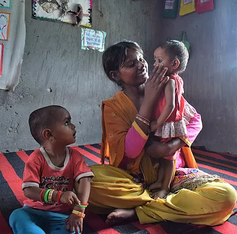
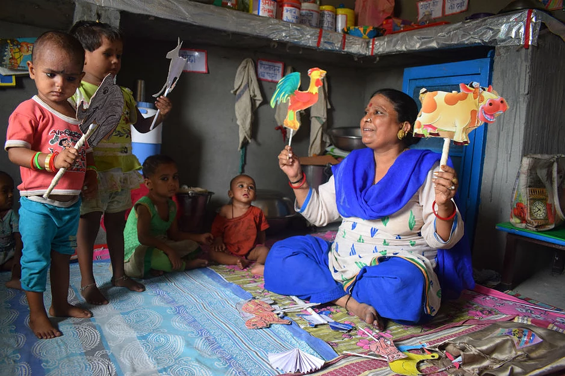
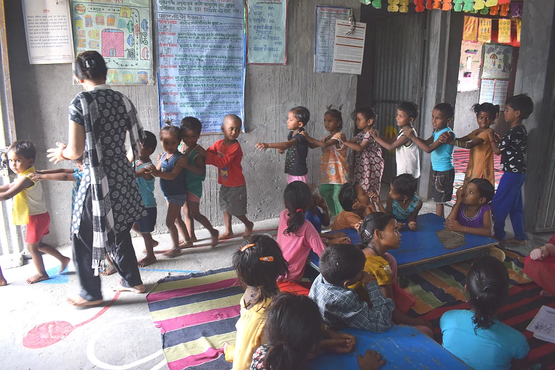
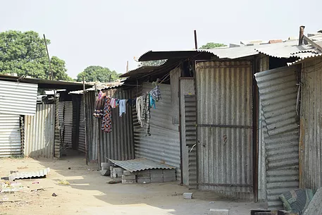

July 3, 2018

Twenty-two year old Pooja is a mother of two young children. She works as a manual labourer at a construction site in Greater Noida, a hub of emerging high-rise townships on the outskirts of New Delhi. Pooja’s story reflects the hardships faced by millions of rural migrants of India who travel to cities in search of better jobs and wages.
After being married at the young age of 19, Pooja migrated from her home town in rural Bihar to India’s capital because the agricultural income of her family farm could no longer sustain her family. She now works nine hours every day at a construction site, mixing cement and carrying it to the male workers on the site, even in the scorching summer sun, when the temperature goes up to 47 degrees Celsius.
“I used to do usual household chores back home in Bihar before my marriage. I had no experience of working as a labourer. Now I have to work from eight to five every day to support my children and myself,” says Pooja.
Pooja’s husband also worked as a manual labourer at various construction sites. However, unable to cope with the pressures of the backbreaking work, he turned to alcohol, before eventually abandoning his family. Pooja now lives alone with her two daughters – two-year-old Priyanka and fourteen months old Pari.
Priyanka and Pari spend their days at a creche, from Monday to Saturday, while their mother is away at work. The creche is run by Mobile Creches, with support from the building partner, and provides holistic childcare services to children from birth till the age of six.
At the creche, Priyanka and Pari are given nutritious meals twice a day, and participate in a variety of age appropriate games and activities, under the able guidance of trained childcare workers.
 For Pooja, the creche has proven to be a life-saver. “I was lost when my husband left me with two young children. I needed to go to work but could not imagine leaving my daughters behind at home unattended. With this creche, I can go to work without worrying about my daughters – I feel they are completely safe there and well looked after,” says Pooja.
After work, Pooja picks up her daughters and takes them home – a tin shack in the labour camp – where she spends the rest of the day with them. "It’s very hot in here, so I give them a bath and then play with them. It’s the most precious time of the day for me,” she says. Pooja hopes to get married again so she can get some additional support for her children.
Pooja is one of the over six million people on the move in India every year. According to a report by the World Economic Forum, the rate of migration within India is growing at 4.5 per cent annually, with Bihar having one of the highest outflows of domestic migrants. Bihar’s per capita income is roughly equivalent to that of Somalia (around $520), while it has a birth rate of 3.4 children per woman.
India’s population explosion and poverty induced rural-urban migration is leading to millions of people landing up in low-paying jobs in difficult settings. The worst impacted are the children of these migrants, who do not get access to proper nutrition, care, education and health care services. These children are often left neglected as their parents go to work, and are highly prone to child abuse and trafficking.